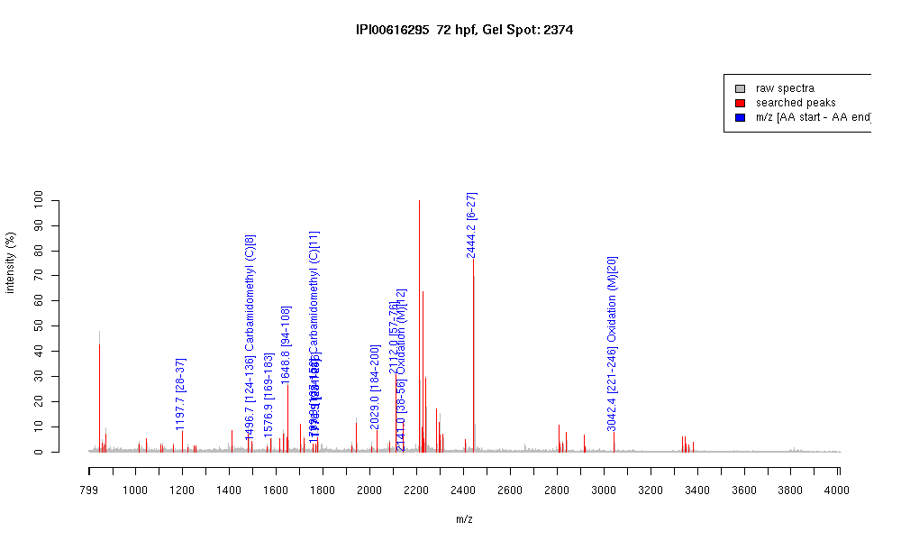

| Name | PREDICTED: similar to F-actin cappingprotein alpha-1 subunit (CapZ alpha-1) |
|---|---|
| MW | 31514.7 |
| PI | 5.8 |
| Mascot Protein Score | 118 |
| Masses (matched / unmatched) | 12 / 59 |

| Peptide | MZ (calc) | MZ (observed) | Error (DA) | Error (PPM) | Start | Stop | Modifications |
|---|---|---|---|---|---|---|---|
| LLLNNDNLLR | 1197.6949 | 1197.707 | 0.0121 | 10 | 28 | 37 | |
| EHYPSGVCTVYGK | 1496.6838 | 1496.6801 | -0.0037 | -2 | 124 | 136 | Carbamidomethyl (C)[8] |
| FNISQSSAQVVGVLK | 1576.8693 | 1576.8578 | -0.0115 | -7 | 169 | 183 | |
| EASDPQPYEGESALR | 1648.7449 | 1648.7501 | 0.0052 | 3 | 94 | 108 | |
| TVDGQQTIIACIEGHK | 1769.885 | 1769.8892 | 0.0042 | 2 | 137 | 152 | Carbamidomethyl (C)[11] |
| EVEESIVVTNEVQTAK | 1774.9069 | 1774.9056 | -0.0013 | -1 | 201 | 216 | |
| KEASDPQPYEGESALR | 1776.8398 | 1776.8644 | 0.0246 | 14 | 93 | 108 | |
| IQVHYYEDGNVQLVSHK | 2029.0138 | 2029.014 | 0.0002 | 0 | 184 | 200 | |
| LDGSEESVLITEHGDLGQGR | 2112.0203 | 2112.0195 | -0.0008 | 0 | 57 | 76 | |
| EGAAHAFAQYNMDQFTPVK | 2140.9756 | 2140.9783 | 0.0027 | 1 | 38 | 56 | Oxidation (M)[12] |
| IAANFVTHAPPGEFNEVFNDVR | 2444.1992 | 2444.1963 | -0.0029 | -1 | 6 | 27 | |
| IIENAENDYQTAISENYQTMSDTTFK | 3042.3521 | 3042.3645 | 0.0124 | 4 | 221 | 246 | Oxidation (M)[20] |